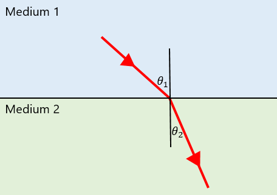
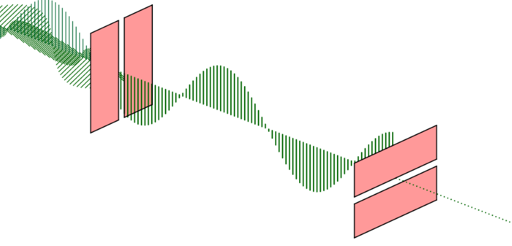

Good Enough to Eat
Back To OverviewDensity (\(\rho\)) is the mass per unit volume, or:
\(\rho=\frac{m}{V}\)
A fluid is any substance that can flow.
Upthrust is the upwards force on an object when submerged in a fluid.
Archimedes' Principle states that upthrust \(=\) weight of fluid displaced.
If an object is completely submerged in a fluid, then the volume of fluid displaced is equal to the volume of the object, so you can find the mass of displaced fluid using \(m=\rho V\), and then the weight of the displaced fluid (the upthrust) using \(W=mg\).
An object will float if upthrust and weight are equal. So, for an object to float, it must sink until it has displaced its own weight of fluid.
Viscosity describes how resistant a fluid is to flowing. Roughly speaking, the lower the viscosity of a fluid, the runnier it is. Viscosity is temperature dependent.
Stokes' Law states that:
\(F=6\pi\eta rv\)
Where \(F\) is the viscous drag force, \(\eta\) is the viscosity of the fluid, \(r\) is the radius of the sphere and \(v\) is the velocity of the sphere.
Stokes' Law only applies to small, spherical objects travelling at low speeds with laminar flow.
Laminar flow is streamlined, and the fluid does not abruptly change in direction or speed. On the other hand, with turbulent flow, there is a lot of mixing and a series of eddies are produced along the object's path.
CORE PRACTICAL 4: Use a falling-ball method to determine the viscosity of a liquid.
Diagram:
Method:
Hooke's law states that, up to the limit of proportionality:
\(\Delta F=k\Delta x\)
Where \(\Delta F\) is the force applied, \(k\) is the spring constant, and \(\Delta x\) is the extension.
For a stiff material, a large force produces a small deformation.
A strong material requires a large force to break.
Elastic deformation is when a material is stretched and then released, and returns to its original form.
On the other hand, with plastic deformation, the material does not return to its original form.
On a force-extension graph, the limit of proportionality is the point at which the graph stops being linear.
The elastic limit is the maximum force that can be applied to an object without plastic deformation occurring.
The yield point is the point on a force-extension graph at which a material begins to rapidly extend for little increase in force.
The larger the gradient of a force-extension graph, the larger the stiffness.
The larger the force at the breaking point, the stronger the object.
The refractive index (\(n\)) of a material is a measure of how much light will slow down by. The more optically dense a material is, the more light slows down when it enters it.
\(n=\frac{c}{v}\)
Where \(c\) is the speed of light in a vacuum (\(3\times 10^{8}\,ms^{-1}\)) and \(v\) is the speed of light in the material.
Snell's law states that at the interface between medium 1 and medium 2:
\(n_{1}\sin\theta_{1}=n_{2}\sin\theta_{2}\)
If the angle of incidence is equal to the critical angle, then the angle of refraction is \(90^{\circ}\).
Total internal reflection is when all of the light reflects within a transparent object. It occurs when the angle of incidence is greater than the critical angle (when going from a more optically dense to a less optically dense material).
A wave is unpolarised if it's oscillations are not confined to a particular plane.
A wave is plane polarised if it only has oscillations in one plane (for an electromagnetic wave, the plane of the electric field's oscillations is what determines the plane of polarisation).
Only transverse waves can be plane polarised.
A polarising filter only transmits waves polarised to a certain plane.
Polarising filters perpendicular to each other will let no light through.
